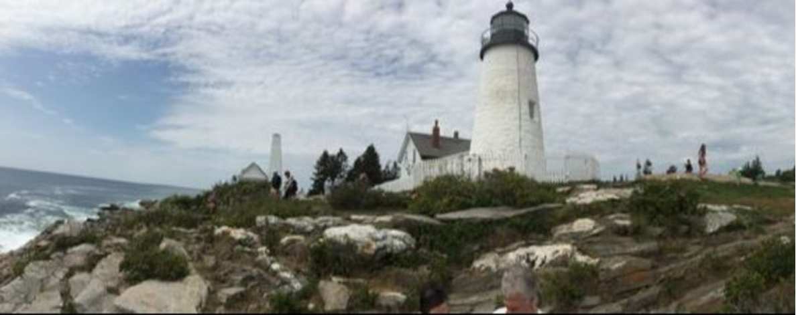

ABOUT
Life from the Center

Quaker Thomas Kelly, Life from the Center is an online pamphlet offered in deep gratitude for the gift of Thomas Kelly's A Testament of Devotion (TD) and The Eternal Promise (EP).
After learning of Thomas Kelly through an esteemed family friend, I went to the internet, found excerpts of his writing posted by Prague Quakers, and immediately became caught up in his words. Within a week I was deeply into my own copy of TD and profoundly affected by its message.
While reading TD and trying to grasp so much that was new to me, I started copying excerpts verbatim and arranging sentences in phrases. That arrangement helped me savor each word and phrase and happened also to highlight the poetry of Kelly's wording. As Prague Quakers had done for me, I was led to put on the internet excerpts that came to be Quaker Thomas Kelly, Life from the Center and to make that introduction accessible and free to anyone, worldwide.
Kathleen B. Wilson
Member, Homewood Friends Meeting
Baltimore, Maryland
The photo above is Pemaquid Lighthouse in Maine near the small summer community to which the Kelly family continually returned. Over the years of their travel and repeated moves, it came to be the place that meant “home.” The photo is by John M. Kelly, grandson of Thomas Kelly and son of Richard 'Dick' Kelly. Beyond that, John developed the website quakerthomaskelly.org and thereby published QUAKER THOMAS KELLY, Life from the Center.
Dick Kelly compiled his father's remaining, spiritual writing into The Eternal Promise, the truly essential companion to A Testament of Devotion. He also wrote the book Thomas Kelly, A Biography, sharing vital biographical information and valuable personal letters. Incredibly, in 2012 through the internet, I found Dick in Maine and four years later discovered he had moved to Baltimore, just 4 miles from my house! It was amazing that I was then able to visit and converse with him, meet and get to know his family, and bring him with me regularly to Friends meeting. He died in April 2019.
Getting to know Dick and his family has been a true gift, and I am profoundly grateful to Dick, his wife Gail, and sons John, Tom, and Paul for their contributions and friendship. KBW